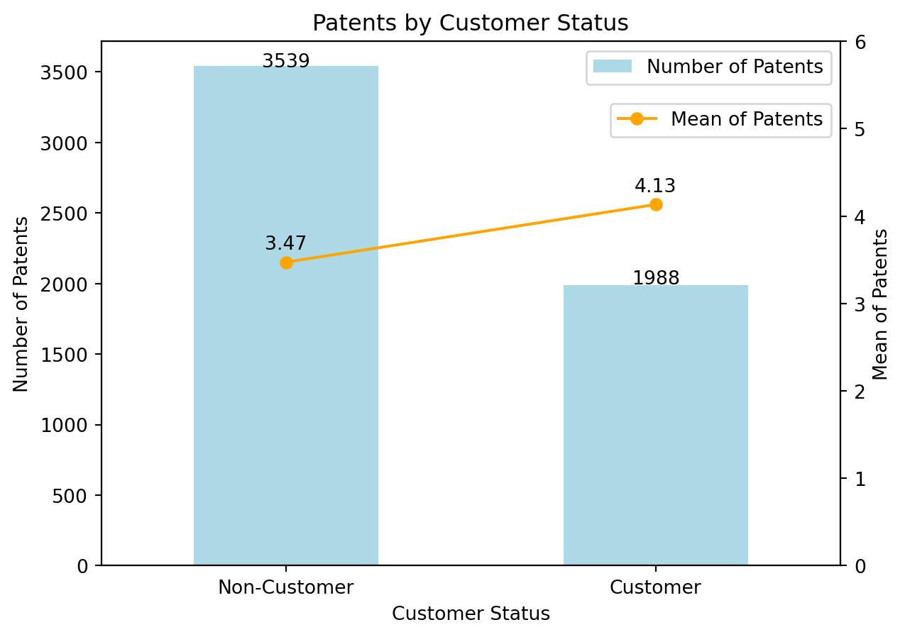
Poisson Regression Examples
Blueprinty Case Study
Introduction
Blueprinty is a small firm that makes software for developing blueprints specifically for submitting patent applications to the US patent office. Their marketing team would like to make the claim that patent applicants using Blueprinty’s software are more successful in getting their patent applications approved. Ideal data to study such an effect might include the success rate of patent applications before using Blueprinty’s software and after using it. Unfortunately, such data is not available.
However, Blueprinty has collected data on 1,500 mature (non-startup) engineering firms. The data include each firm’s number of patents awarded over the last 5 years, regional location, age since incorporation, and whether or not the firm uses Blueprinty’s software. The marketing team would like to use this data to make the claim that firms using Blueprinty’s software are more successful in getting their patent applications approved.
Data Summary
Comparison of histograms and means of number of patents by customer status
- Customers of Blueprinty have fewer firms overall but a higher average number of patents.
- On average, customers have 4.13 patents compared to 3.47 for non-customers.
Blueprinty customers are not selected at random. It may be important to account for systematic differences in the age and regional location of customers vs non-customers.
Comparison of regions and ages by customer status
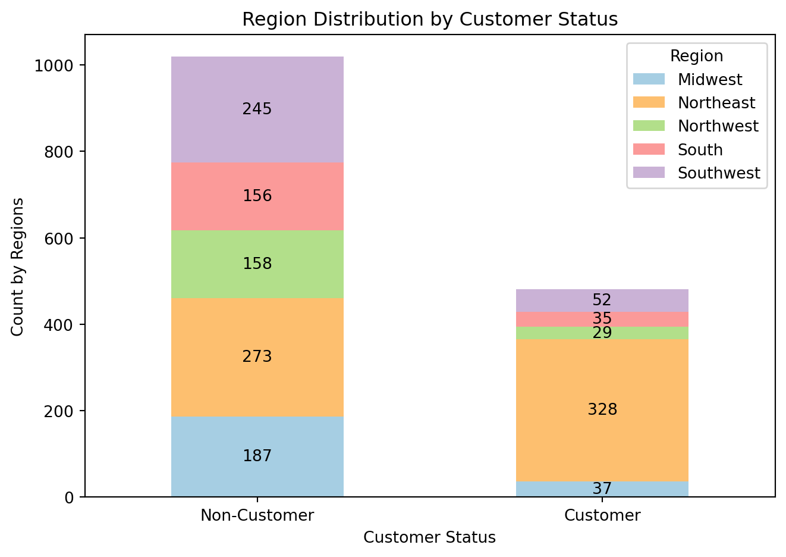
- Most customers come from the Northeast region, while non-customers are more evenly distributed across all regions.
- The Midwest, South, and Southwest regions are underrepresented among Blueprinty customers compared to non-customers.
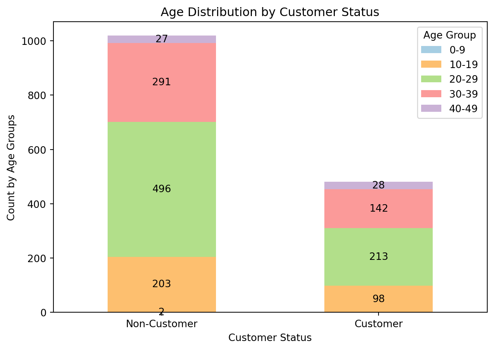
- Both customers and non-customers are concentrated in the 20–39 age range, but non-customers tend to be slightly younger overall.
- The youngest group (ages 0–9) is almost exclusively non-customers, while customers have a relatively higher proportion in the 30–49 range.
Estimation of Simple Poisson Model
Since our outcome variable of interest can only be small integer values per a set unit of time, we can use a Poisson density to model the number of patents awarded to each engineering firm over the last 5 years. We start by estimating a simple Poisson model via Maximum Likelihood.
The mathematical likelihood for_ \(Y \sim \text{Poisson}(\lambda)\). Note that \(f(Y|\lambda) = e^{-\lambda}\lambda^Y/Y!\).
\[ \log L(\lambda) = \sum_{i=1}^{n} \left( -\lambda + Y_i \log(\lambda) - \log(Y_i!) \right) \]
Code the likelihood (or log-likelihood) function for the Poisson model. This is a function of lambda and Y. For example:
import numpy as np
import pandas as pd
from scipy.special import gammaln
# target variable
Y_data = blueprinty['patents'].values
# define the Poisson log-likelihood function
def poisson_loglikelihood(lmbda, Y):
Y = np.array(Y)
return np.sum(Y * np.log(lmbda) - lmbda - gammaln(Y + 1))
# test example
print("log-likelihood at λ=3.0:", poisson_loglikelihood(3.0, Y_data))log-likelihood at λ=3.0: -3476.8568706008004Use my function to plot lambda on the horizontal axis and the likelihood (or log-likelihood) on the vertical axis for a range of lambdas (use the observed number of patents as the input for Y)._
import matplotlib.pyplot as plt
# Create a range of lambda values
lambda_range = np.linspace(0.1, 10, 300)
# Compute log-likelihood for each lambda
loglik_values = [poisson_loglikelihood(lmb, Y_data) for lmb in lambda_range]
# Find the lambda that gives the maximum log-likelihood
lambda_mle_empirical = lambda_range[np.argmax(loglik_values)]
# Plot the curve
plt.figure(figsize=(8, 5))
plt.plot(lambda_range, loglik_values, label="Log-Likelihood Curve")
plt.axvline(lambda_mle_empirical, color="red", linestyle="--", label=f"Empirical Max λ ≈ {lambda_mle_empirical:.2f}")
plt.xlabel("Lambda (λ)")
plt.ylabel("Log-Likelihood")
plt.title("Poisson Log-Likelihood Curve")
plt.legend()
plt.grid(True)
plt.tight_layout()
plt.show()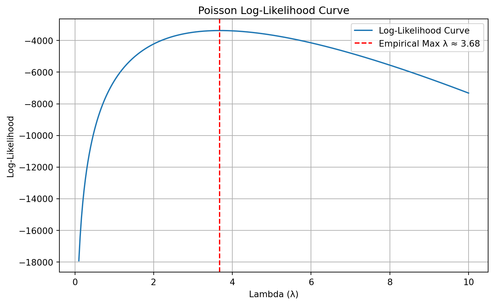
Take the first derivative of your likelihood or log-likelihood, set it equal to zero and solve for lambda. We find lambda_mle is Ybar, which “feels right” because the mean of a Poisson distribution is lambda.
# Compute theoretical MLE as the sample mean
lambda_mle_theory = np.mean(Y_data)
print(f"Theoretical MLE λ = mean(Y) = {lambda_mle_theory:.4f}")Theoretical MLE λ = mean(Y) = 3.6847Find the MLE by optimizing my likelihood function with sp.optimize() in Python.
from scipy.optimize import minimize_scalar
# Find λ that maximizes the log-likelihood using numerical optimization
result = minimize_scalar(
lambda lmb: -poisson_loglikelihood(lmb, Y_data), # we minimize the negative log-likelihood
bounds=(0.01, 20),
method="bounded"
)
lambda_mle_optimized = result.x
print(f"Optimized MLE λ = {lambda_mle_optimized:.4f}")Optimized MLE λ = 3.6847Estimation of Poisson Regression Model
Next, we extend our simple Poisson model to a Poisson Regression Model such that \(Y_i = \text{Poisson}(\lambda_i)\) where \(\lambda_i = \exp(X_i'\beta)\). The interpretation is that the success rate of patent awards is not constant across all firms (\(\lambda\)) but rather is a function of firm characteristics \(X_i\). Specifically, we will use the covariates age, age squared, region, and whether the firm is a customer of Blueprinty.
Update my likelihood or log-likelihood function with an additional argument to take in a covariate matrix X. Also change the parameter of the model from lambda to the beta vector. In this model, lambda must be a positive number, so we choose the inverse link function g_inv() to be exp() so that_ \(\lambda_i = e^{X_i'\beta}\). _For example:
# Define Poisson log-likelihood function with stable exp()
def poisson_regression_loglik(beta, Y, X):
lin_pred = X @ beta
lin_pred = np.clip(lin_pred, -20, 20) # numerical stability
lambda_i = np.exp(lin_pred)
return -np.sum(Y * lin_pred - lambda_i - gammaln(Y + 1))Use my function along with Python’s sp.optimize() to find the MLE vector and the Hessian of the Poisson model with covariates. Specifically, the first column of X should be all 1’s to enable a constant term in the model, and the subsequent columns should be age, age squared, binary variables for all but one of the regions, and the binary customer variable. Use the Hessian to find standard errors of the beta parameter estimates and present a table of coefficients and standard errors.
# Initial guess (zeros)
beta_init = np.zeros(X.shape[1])
# Minimize negative log-likelihood
result = minimize(
poisson_regression_loglik,
beta_init,
args=(Y, X),
method='BFGS',
options={'disp': True}
)
# Extract coefficients
beta_mle = result.x
# Compute standard errors from inverse Hessian
hessian_inv = result.hess_inv
standard_errors = np.sqrt(np.diag(hessian_inv))
# Format output as DataFrame
regression_result = pd.DataFrame({
'Coefficient': beta_mle,
'Std. Error': standard_errors
}, index=param_names)
print(regression_result) Current function value: 3258.072164
Iterations: 14
Function evaluations: 804
Gradient evaluations: 88
Coefficient Std. Error
Intercept -0.509955 0.193037
C(region)[T.Northeast] 0.029159 0.046759
C(region)[T.Northwest] -0.017578 0.057235
C(region)[T.South] 0.056567 0.056242
C(region)[T.Southwest] 0.050589 0.049609
age 0.148702 0.014460
age_squared -0.002972 0.000266
iscustomer 0.207600 0.032939/opt/conda/lib/python3.11/site-packages/scipy/optimize/_minimize.py:708: OptimizeWarning:
Desired error not necessarily achieved due to precision loss.
Check my results using Python sm.GLM() function.
import statsmodels.api as sm
# Fit Poisson regression using statsmodels GLM
glm_poisson = sm.GLM(Y, X, family=sm.families.Poisson())
glm_results = glm_poisson.fit()
# Display regression summary (coefficients, standard errors, z-scores)
print(glm_results.summary()) Generalized Linear Model Regression Results
==============================================================================
Dep. Variable: y No. Observations: 1500
Model: GLM Df Residuals: 1492
Model Family: Poisson Df Model: 7
Link Function: Log Scale: 1.0000
Method: IRLS Log-Likelihood: -3258.1
Date: Wed, 07 May 2025 Deviance: 2143.3
Time: 22:29:27 Pearson chi2: 2.07e+03
No. Iterations: 5 Pseudo R-squ. (CS): 0.1360
Covariance Type: nonrobust
==============================================================================
coef std err z P>|z| [0.025 0.975]
------------------------------------------------------------------------------
const -0.5089 0.183 -2.778 0.005 -0.868 -0.150
x1 0.0292 0.044 0.669 0.504 -0.056 0.115
x2 -0.0176 0.054 -0.327 0.744 -0.123 0.088
x3 0.0566 0.053 1.074 0.283 -0.047 0.160
x4 0.0506 0.047 1.072 0.284 -0.042 0.143
x5 0.1486 0.014 10.716 0.000 0.121 0.176
x6 -0.0030 0.000 -11.513 0.000 -0.003 -0.002
x7 0.2076 0.031 6.719 0.000 0.147 0.268
==============================================================================Key Variable Interpretations:
- iscustomer (whether the firm uses Blueprinty software):
Coefficient: +0.208
P-value < 0.001 → statistically significant
In a Poisson regression, this means the expected patent count for users is: \(e^{0.208} \approx 1.23\)
This implies that firms using Blueprinty software have, on average, 23% more patents than those who do not.
- age and age_squared:
age: +0.149 → older firms tend to have more patents
age_squared: -0.003 → diminishing returns, the effect of age decreases as firms get older
This suggests that patent counts increase with firm age, but at a decreasing rate.
- region:
- Region dummy variables show only minor differences compared to the baseline (Midwest)
- Most region effects are not statistically significant, acting as control variables
Summary:
- There is a significant positive association between using Blueprinty software and higher patent counts.
- Age is a meaningful predictor with diminishing marginal effects.
- Regional differences are minor and do not substantially influence model predictions.
Because the beta coefficients are not directly interpretable, it may help to create two fake datasets: X_0 and X_1 where X_0 is the X data but with iscustomer=0 for every observation and X_1 is the X data but with iscustomer=1 for every observation. Then, use X_0 and my fitted model to get the vector of predicted number of patents (y_pred_0) for every firm in the dataset, and use X_1 to get Y_pred_1 for every firm. Then subtract y_pred_1 minus y_pred_0 and take the average of that vector of differences.
# Copy design matrix
X_0 = X.copy()
X_1 = X.copy()
# Find column index of "iscustomer"
iscust_idx = X_design.design_info.column_names.index("iscustomer")
# Simulate everyone as non-customer (0)
X_0[:, iscust_idx] = 0
# Simulate everyone as customer (1)
X_1[:, iscust_idx] = 1
# Predict expected patent counts for both cases
y_pred_0 = glm_results.predict(X_0)
y_pred_1 = glm_results.predict(X_1)
# Compute average treatment effect
average_treatment_effect = np.mean(y_pred_1 - y_pred_0)
print(f"Average treatment effect of Blueprinty software: {average_treatment_effect:.4f}")Average treatment effect of Blueprinty software: 0.7928AirBnB Case Study
Introduction
AirBnB is a popular platform for booking short-term rentals. In March 2017, students Annika Awad, Evan Lebo, and Anna Linden scraped of 40,000 Airbnb listings from New York City. The data include the following variables:
Explorary Data Analysis
airbnb.info()
airbnb.describe()<class 'pandas.core.frame.DataFrame'>
RangeIndex: 40628 entries, 0 to 40627
Data columns (total 14 columns):
# Column Non-Null Count Dtype
--- ------ -------------- -----
0 Unnamed: 0 40628 non-null int64
1 id 40628 non-null int64
2 days 40628 non-null int64
3 last_scraped 40628 non-null object
4 host_since 40593 non-null object
5 room_type 40628 non-null object
6 bathrooms 40468 non-null float64
7 bedrooms 40552 non-null float64
8 price 40628 non-null int64
9 number_of_reviews 40628 non-null int64
10 review_scores_cleanliness 30433 non-null float64
11 review_scores_location 30374 non-null float64
12 review_scores_value 30372 non-null float64
13 instant_bookable 40628 non-null object
dtypes: float64(5), int64(5), object(4)
memory usage: 4.3+ MB| Unnamed: 0 | id | days | bathrooms | bedrooms | price | number_of_reviews | review_scores_cleanliness | review_scores_location | review_scores_value | |
|---|---|---|---|---|---|---|---|---|---|---|
| count | 40628.000000 | 4.062800e+04 | 40628.000000 | 40468.000000 | 40552.000000 | 40628.000000 | 40628.000000 | 30433.000000 | 30374.000000 | 30372.000000 |
| mean | 20314.500000 | 9.698889e+06 | 1102.368219 | 1.124592 | 1.147046 | 144.760732 | 15.904426 | 9.198370 | 9.413544 | 9.331522 |
| std | 11728.437705 | 5.460166e+06 | 1383.269358 | 0.385884 | 0.691746 | 210.657597 | 29.246009 | 1.119935 | 0.844949 | 0.902966 |
| min | 1.000000 | 2.515000e+03 | 1.000000 | 0.000000 | 0.000000 | 10.000000 | 0.000000 | 2.000000 | 2.000000 | 2.000000 |
| 25% | 10157.750000 | 4.889868e+06 | 542.000000 | 1.000000 | 1.000000 | 70.000000 | 1.000000 | 9.000000 | 9.000000 | 9.000000 |
| 50% | 20314.500000 | 9.862878e+06 | 996.000000 | 1.000000 | 1.000000 | 100.000000 | 4.000000 | 10.000000 | 10.000000 | 10.000000 |
| 75% | 30471.250000 | 1.466789e+07 | 1535.000000 | 1.000000 | 1.000000 | 170.000000 | 17.000000 | 10.000000 | 10.000000 | 10.000000 |
| max | 40628.000000 | 1.800967e+07 | 42828.000000 | 8.000000 | 10.000000 | 10000.000000 | 421.000000 | 10.000000 | 10.000000 | 10.000000 |
Variables Distribution
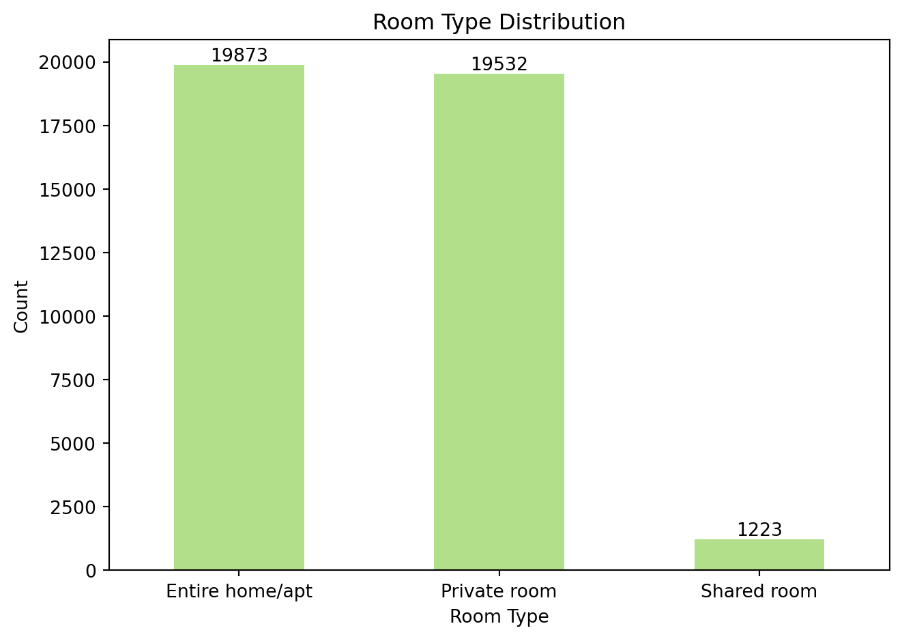
- The majority of listings are either entire homes/apartments or private rooms, with nearly equal counts.
- Shared rooms are much less common, accounting for only a small fraction of the total listings.
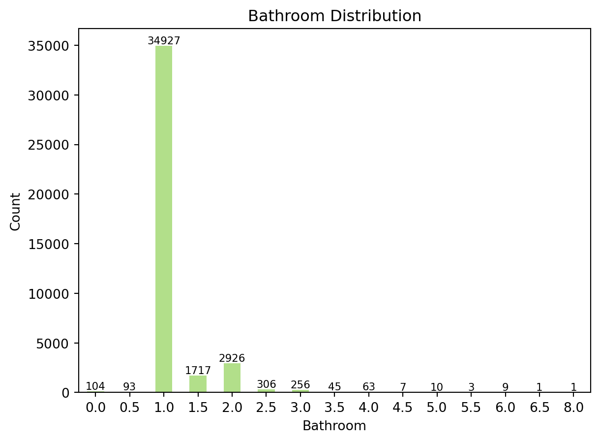
- The vast majority of listings have exactly one bathroom, with over 34,000 such cases.
- Listings with more than two bathrooms are rare, and those with zero or fractional bathrooms also occur infrequently.
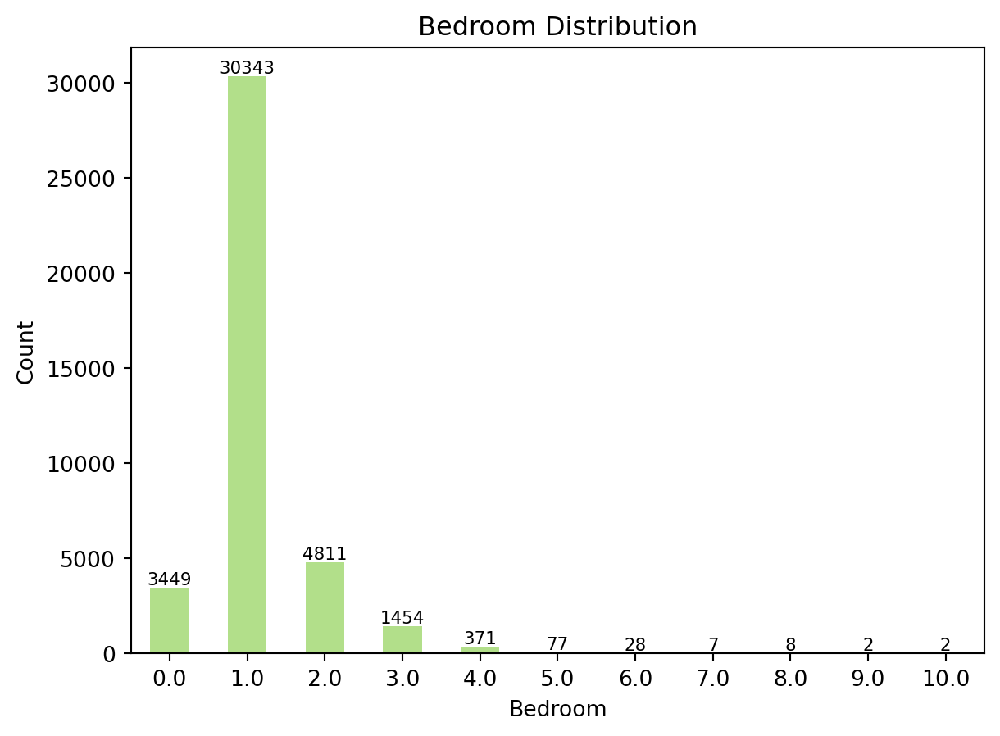
- The majority of listings have exactly one bedroom, with over 30,000 such entries.
- Listings with three or more bedrooms are relatively rare, and those with zero bedrooms likely represent studio or shared space accommodations.
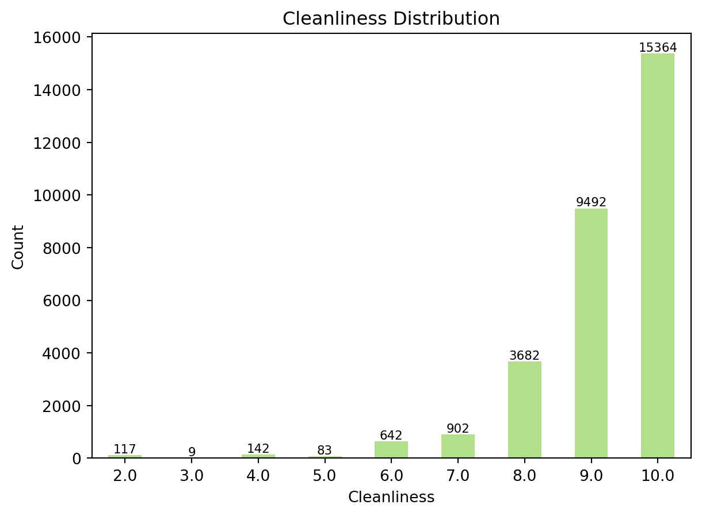
- Most listings have high cleanliness scores, with the majority rated 9 or 10.
- Very few listings fall below a cleanliness score of 6, indicating generally high standards across the dataset.
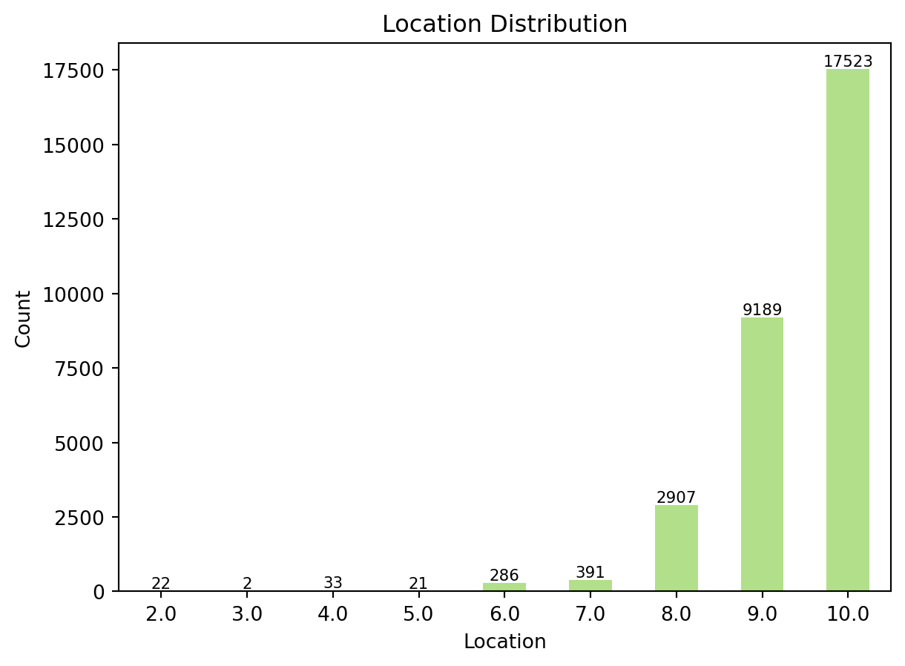
- Locaion share similar trend with cleanliness. The vast majority of listings have high location ratings, with most scoring 9 or 10.
- Listings rated below 7 are very rare, indicating that location is generally perceived positively across the dataset.
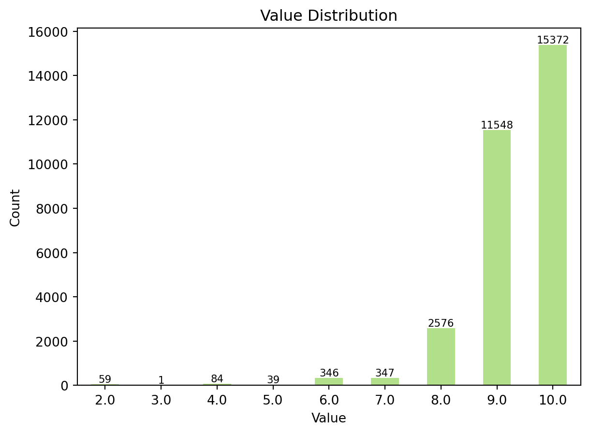
- Value also share similar trend with location and cleanliness. Most of the listings have high value score, with the majority scoring 9 or 10.
- Listings rated below 7 are very rare, indicating that value is generally perceived positively across the dataset.
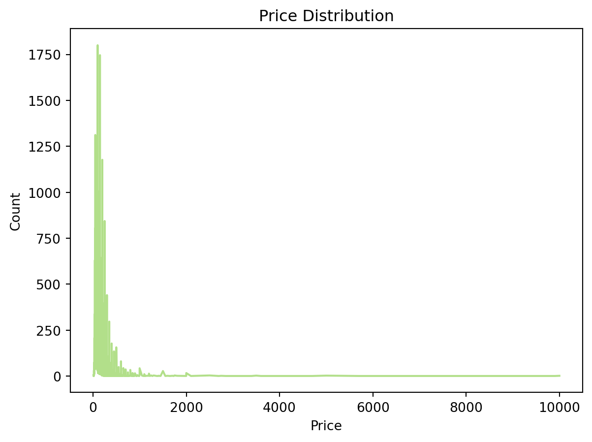
- The price distribution is highly right-skewed, with most listings priced under $1,000.
- A small number of listings have extremely high prices, creating a long tail on the higher end of the distribution.
Price Distribution by Different Variables
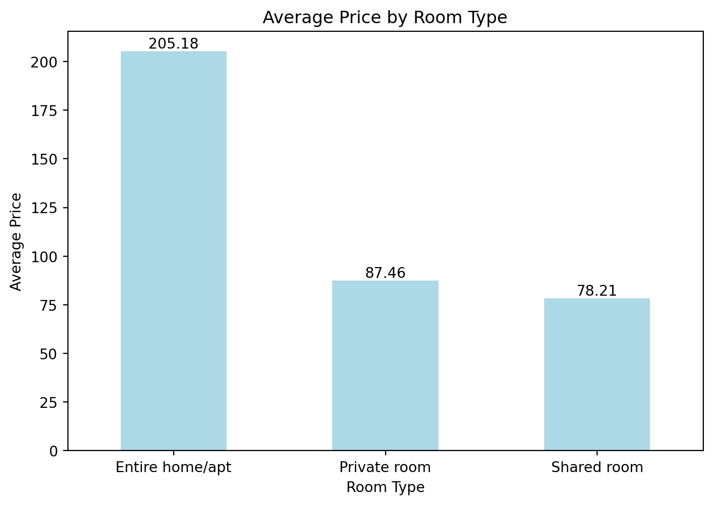
- Entire home/apartment listings have the highest average price at around $205.
- Private rooms and shared rooms are significantly more affordable, with average prices of approximately $87 and $78 respectively.
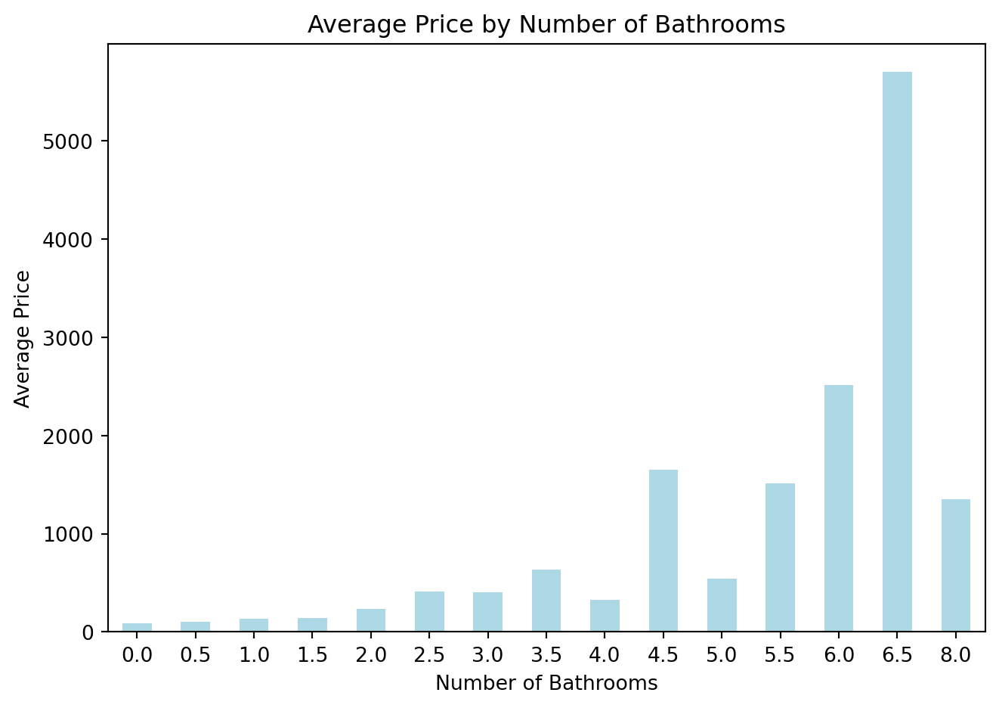
- Average price tends to increase with the number of bathrooms, showing a clear upward trend.
- Listings with 6 or more bathrooms are priced significantly higher, with some reaching over $5,000 on average.
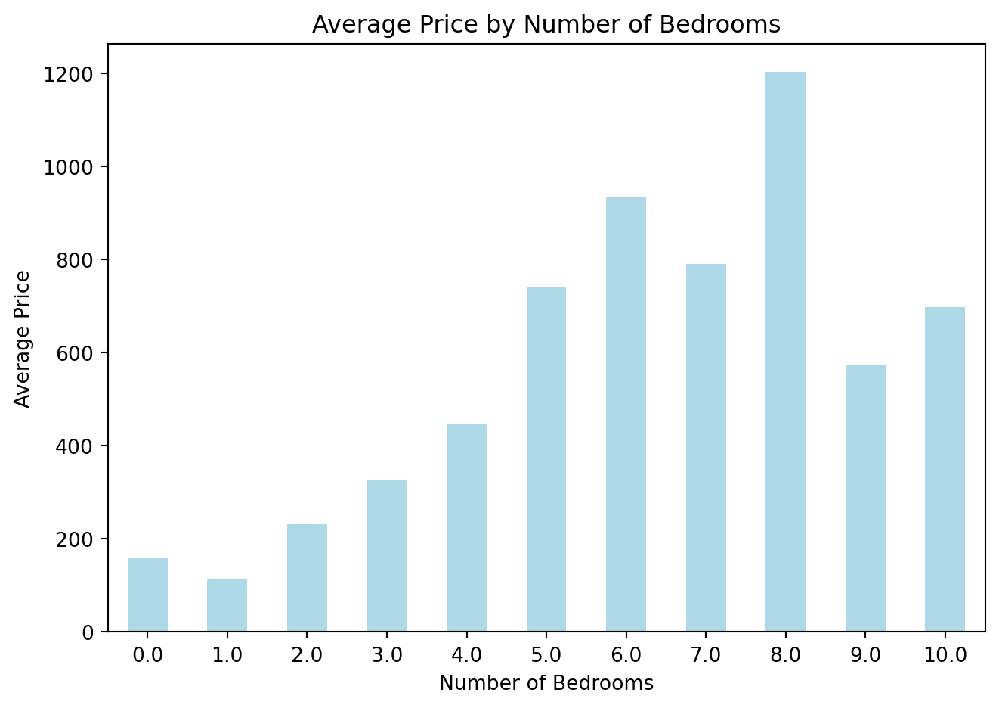
- Average price generally increases with the number of bedrooms, peaking at 8 bedrooms with an average price around $1,200.
- After 8 bedrooms, the average price fluctuates and slightly declines, possibly due to fewer listings or outliers in those categories.
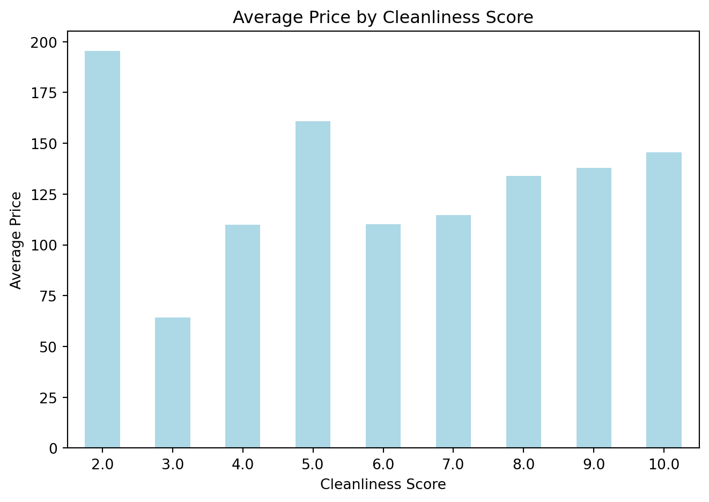
- Average price does not follow a clear linear trend with cleanliness score.
- Interestingly, listings with very low cleanliness scores (e.g., 2 or 5) show higher average prices than those with mid-range scores, suggesting possible outliers or low sample size effects.
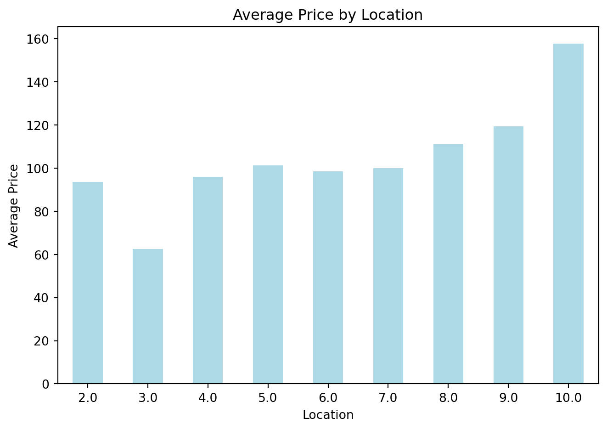
- Average price generally increases with higher location scores, especially for listings rated 10, which have the highest average price.
- Listings with lower location scores (such as 3 or below) tend to have significantly lower prices.
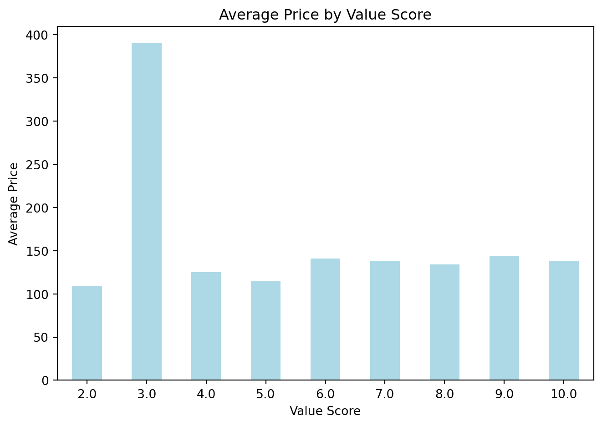
- The average price is relatively stable across most value scores, typically ranging between $110 and $140.
- However, listings with a value score of 3 show an unusually high average price, which may indicate the presence of outliers or data anomalies.
Model Building
import pandas as pd
import numpy as np
import patsy
import statsmodels.api as sm
# Load dataset
# Step 1: Select relevant variables
relevant_vars = ['number_of_reviews', 'bedrooms', 'bathrooms', 'room_type', 'price']
# Step 2: Drop rows with missing values in relevant variables
airbnb_clean = airbnb.dropna(subset=relevant_vars).copy()
# Step 3: Feature engineering
# Apply log-transform to skewed variable `price`
airbnb_clean['price_log'] = np.log1p(airbnb_clean['price']) # log(1 + price) to handle zeros/skewness
# Convert categorical variable to category type (for dummy encoding)
airbnb_clean['room_type'] = airbnb_clean['room_type'].astype('category')
# Step 4: Create design matrices using patsy
# This builds the regression formula for Poisson regression
y, X = patsy.dmatrices(
'number_of_reviews ~ bedrooms + bathrooms + price_log + C(room_type)',
data=airbnb_clean,
return_type='dataframe'
)
# Step 5: Fit Poisson regression model using statsmodels
model = sm.GLM(y, X, family=sm.families.Poisson())
results = model.fit()
# Step 6: Output model summary
print(results.summary()) Generalized Linear Model Regression Results
==============================================================================
Dep. Variable: number_of_reviews No. Observations: 40395
Model: GLM Df Residuals: 40389
Model Family: Poisson Df Model: 5
Link Function: Log Scale: 1.0000
Method: IRLS Log-Likelihood: -7.2270e+05
Date: Wed, 07 May 2025 Deviance: 1.3222e+06
Time: 22:29:29 Pearson chi2: 2.16e+06
No. Iterations: 6 Pseudo R-squ. (CS): 0.1308
Covariance Type: nonrobust
================================================================================================
coef std err z P>|z| [0.025 0.975]
------------------------------------------------------------------------------------------------
Intercept 3.0093 0.013 230.701 0.000 2.984 3.035
C(room_type)[T.Private room] -0.1105 0.003 -33.717 0.000 -0.117 -0.104
C(room_type)[T.Shared room] -0.3607 0.009 -40.154 0.000 -0.378 -0.343
bedrooms 0.0871 0.002 43.538 0.000 0.083 0.091
bathrooms -0.1409 0.004 -37.006 0.000 -0.148 -0.133
price_log -0.0273 0.003 -10.354 0.000 -0.033 -0.022
================================================================================================Coefficient Interpretation (Exponentiate to interpret effect size):
In Poisson regression, coefficients represent the log change in the expected count per one-unit increase in the predictor. To interpret in terms of percent change, use: \[ \text{Percent Change} = (e^{\beta} - 1) \times 100 \] Where \(\beta\) is the coefficient from the model.
Poisson Regression Coefficients
| Variable | Coefficient | P-value | Interpretation |
|---|---|---|---|
| Intercept | 3.0093 | < 0.001 | Baseline: Entire home/apartment with 0 bedrooms and 0 bathrooms at price_log=0 Expected: \((e^{3.0093} \approx 20.26)\) |
| Private room (vs Entire home) |
-0.1105 | < 0.001 | Private rooms have ~10.5% fewer reviews than entire homes/apartment \((e^{-0.1105} \approx 0.895)\) |
| Shared room (vs Entire home) |
-0.3607 | < 0.001 | Shared rooms have ~30.3% fewer reviews than entire homes/apartment \((e^{-0.3607} \approx 0.697)\) |
| Bedrooms | +0.0871 | < 0.001 | Each additional bedroom increases reviews by ~9.1% \((e^{0.0871} \approx 1.091)\) |
| Bathrooms | -0.1409 | < 0.001 | Each additional bathroom decreases reviews by ~13.1% \((e^{-0.1409} \approx 0.869)\) |
| Price (log) | -0.0273 | < 0.001 | A 1% increase in price slightly reduces reviews by ~2.7% \((e^{-0.0273} \approx 0.973)\) |
Summary:
- Room type: Private and shared rooms tend to receive fewer reviews than entire apartments (statistically significant).
- Bedrooms: More bedrooms → more reviews (positive relationship).
- Bathrooms: More bathrooms → surprisingly associated with fewer reviews (possibly due to multicollinearity or price confounding).
- Price (log): Listings with higher prices (after log transformation) tend to receive slightly fewer reviews.